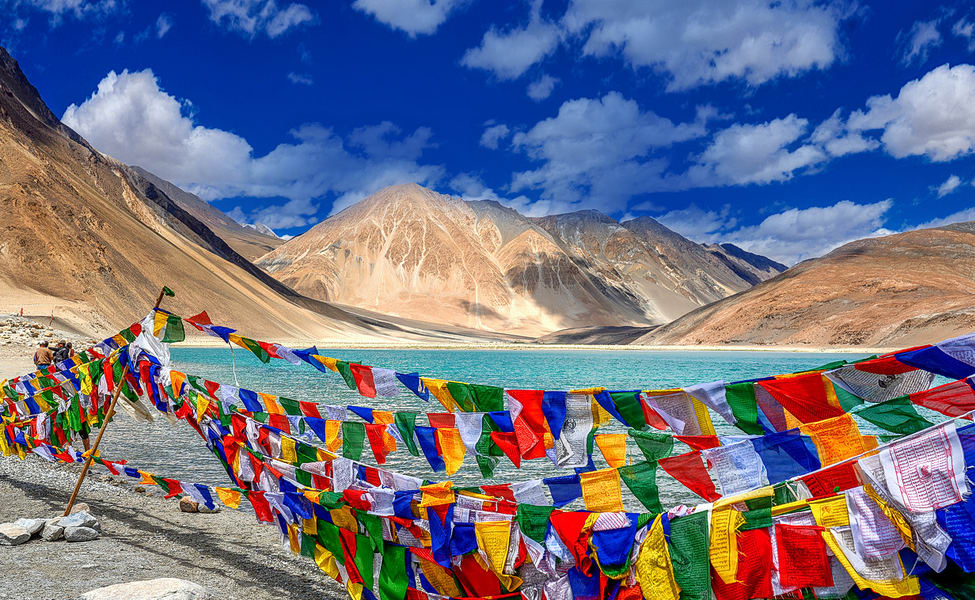

Kashmir Ladakh is two beautiful places in the top most regions of northern India contrary in the beauty and landscape. The Kashmir is peaceful and green adorned by apple orchards, huge valleys, fresh water lakes, streams filled with fishes, verdant forests and amazing natural beauty can be seen everywhere. On the other hand Ladakh is a barren land dry and infertile. The impression a traveler gets of Ladakh on first visit is a vivid picture of people in unique colorful costumes and headgear, small scattered houses here and there on the green patches of land.
The Land of High Passes, Ladakh, the newly created Union Territory in India (previously a part of Jammu & Kashmir), boasts a landscape that can leave you with your jaws dropped. It is a place where the landscape changes dramatically; it is truly astonishing to see the mountains, snow, cold desert, alpine meadows and lakes at a short distance from each other. Tourism in Ladakh is an absolute delight for nature lovers as well as adventurers.Adorned with the lofty barren mountains, Ladakh is home to some of the highest motorable Ladakh is further divided into three regions - Leh, Nubra, and Zanskar, and each region has several places to see.
Ladakh is majorly popular amongst the adventurers who feel welcomed by the number of adrenaline rushing activities offered here. The union territory is amongst the top trekking destinations in India with amazing and unmatched treks like the popular Frozen River Trek/Chadar Trek. Ladakh also has opportunities for mountaineering, motor biking, mountain biking, white water rafting and more.
One of the biggest national parks in North India, Ranthambore National Park is particularly popular with travelers hoping to spot an elusive tiger in the wild. Although tigers are the main draw here, the reserve is home to other critters—including sambar deer, wild boars, sloth bears, striped hyenas, and hundreds of bird species—and a 10th-century fort..Our Ranthambore tour packages are your getaway to the best wildlife holiday experience in India. We offer Ranthambore tours from all major destinations in the world, and cater to a variety of wildlife enthusiasts, both domestic and international. Choose from our wide range of family-friendly wildlife tours, photography, corporate outings, honeymoon, educational tour, tiger or birdwatching tour in Ranthambore, and avail the best services, deals, and experiences.
Why is Amber Palace famous? Amber Fort - Wikipedia Amer Fort is known for its artistic style elements. With its large ramparts and series of gates and cobbled paths, the fort overlooks Maota Lake, which is the main source of water for the Amer Palace. Reference no. Amer Palace is great example of Rajput architecture.One of the top tourist attractions of Jaipur, the huge Amer Palace Fort sits atop a small hill, and is located at a distance about 11 km from the main city. The magnificent Amer Fort is an extensive palace complex that has been built with pale yellow and pink sandstone, and with white marble. The fort is divided into four main sections that are graced with their own courtyards.